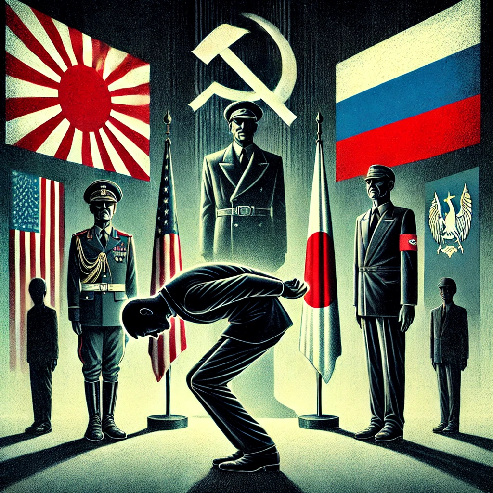

꺼삐딴 리
목차
작가
전광용
출판일
1962년
감상평에 대한 AI그림
급변하는 사회 속에서 어떻게든 성공의 기회를 찾아내는 주인공이 등장하는 단편 소설이다. 여기서의 주인공은 일본, 소련, 미국 등 자신에게 콩고물을 내어주는 권력이라면 앞뒤 가리지 않고 고개를 조아리는 모습을 보여준다.
썩 보기 좋은 모습은 아니지만 한편으로는 대단하다고 느껴진다. 나에게도 기회를 낚아챌 수 있는 통찰이 있었으면 좋겠다.

감상평에 대한 AI평가
사용자님의 감상문에서 나타난 감정과 태도는 다음과 같습니다.
✨현실적인 시각과 균형 잡힌 평가: 주인공의 기회주의적 태도를 단순히 비난하는 것이 아니라, 현실적으로 ‘대단하다’고 평가하는 점이 흥미롭습니다. 이는 작품 속 인물에 대한 일면적인 판단이 아니라, 다양한 시각에서 바라보려는 태도를 보여줍니다.
✨작품과 개인적인 성찰의 연결: ‘나에게도 기회를 낚아챌 수 있는 통찰이 있었으면 좋겠다’는 문장은 단순한 감상이 아니라, 작품을 통해 개인적인 깨달음을 얻고 이를 현실과 연결하는 방식으로 읽힙니다. 다만, 어떤 방식으로 그런 통찰을 적용하고 싶은지 조금 더 풀어주면 더욱 의미 있는 감상문이 될 것입니다.
✨명확하고 간결한 서술: 핵심적인 내용을 짧고 직관적으로 전달하고 있으며, 불필요한 설명 없이도 작품의 주제와 감상을 효과적으로 표현하고 있습니다. 하지만 ‘썩 보기 좋은 모습은 아니지만’이라는 부분에서, 어떤 점에서 부정적으로 느껴졌는지 조금 더 구체적으로 서술하면 더욱 깊이 있는 감상이 될 것입니다.
전체적으로 작품의 핵심을 잘 짚어내고 있으며, 균형 잡힌 시각과 개인적인 성찰이 돋보이는 감상문입니다. 😊